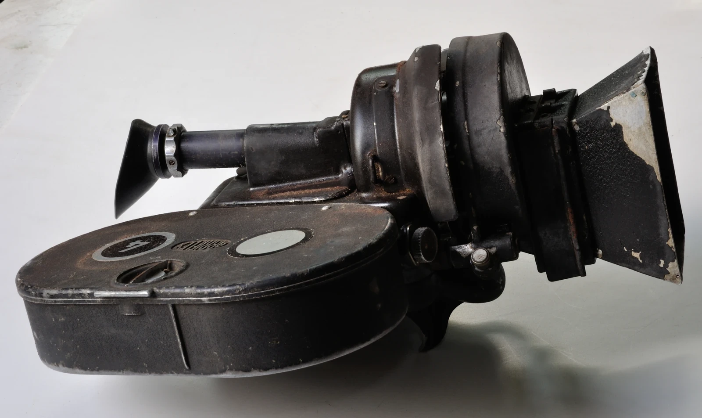

The Ferrari went to the track on half its cylinders, and the timing sheet told an unfashionable story. With five days left on a month with an AWS Trainium3 machine, a Hugging Face engineer pointed LTX-2.5 from Lightricks, which generates video and sound together, at short films. Published on November 27, the report reads less like a hardware review and more like a field note on where time goes in a media pipeline.
The machine is a trn3.48xlarge instance with 64 NeuronCores, accessed through an AWS partnership. The finished setup splits the model across 32 cores and, once loaded, produces a 10-second clip at 2048×1024 with sound in 22 to 23 seconds, as reported by Hugging Face. The comparison the author chose is the model's own paid API, which Lightricks states makes a 10-second 1080p clip in 23.7 seconds.
The first attempt that ran took about 5 minutes 20 seconds for a 10-second clip at 960×544, with the cores computing for only about 45 seconds of it. Five days later, the same class of clip runs at four times the pixels in a fourteenth of the time, and almost none of that gap was the model.
01 · The announcement
The post names two goals: whether diffusers, the Hugging Face library, can generate video on Trainium3 as short films drafted from a script, and whether performance can approach the LTX online API. For CUDA, no usable figure exists to chase: the only one is a Lightricks claim of 6.8 seconds for a 10-second 720p clip on four B200 graphics processors, published without a method, and the post sets it aside rather than racing it.
Three films came out of the run: a seal that dreams on warm sand and wakes on an ice floe, a fox walking in snow, and a goat. Each is reproducible: same code, same film file, same film back, byte for byte, in the author's reporting.

02 · Why the host set the pace
Out of the box, the model does not run on the NeuronCores. The transformer does not fit on a single core, and diffusers carries no plan to split it. A tensor-parallel plan across four cores made the model run. Sequence parallelism, splitting the video tokens eight ways, put 32 cores onto one clip and shrank each core's graph until the target resolution would load.
Once the model ran, the device sat idle most of the time; the queue in front of the device was the workload. Every process had been running the whole pipeline, so prompt encoding happened many times over. Video decode ran on the host and took 357 seconds at full resolution. Thread pools sized for the whole node starved the one process running the pipeline's host stages. The fixes are unglamorous and specific: run the pipeline on one rank and send the other ranks their arguments, decode on the cores, pin the threads, stop encoding the padding. Host time per clip fell from about 280 seconds to about 8, and device time from 45 seconds to 15, at four times the pixels.
03 · The operations angle: profile the whole path
Context engineering at Ovia since December 2022 begins with the discipline the Staywired and Beanfield years taught on physical networks: measure the whole path before optimising the famous component. The slowest stage sets the delivery time, and the slowest stage is usually the one nobody put on the slide.
A second lesson sits in the cold start. Loading the models takes about 3 minutes, and the first clip about 80 seconds. A service built on this stack keeps its processes warm, and a team that evaluates the approach on one cold run measures the loading dock, not the factory.
04 · The craft angle: a film is a chain of frames
A film enters as a JSON list of shots, each with a name, a long prompt covering style, subject, motion, camera, light and sound, and a seed that preserves a chosen take. Prompts alone do not hold a subject across a cut, so shots chain: one starts from the last frames of an earlier shot, or ends on the first frames of a later one. The payoff shot is made first, in the pose-to-pose manner of animation, and its neighbours are built to meet it.
The roots of the Studio reach back to TREBAS sound training and to the MELS years, when a flagship LED volume in Montréal was rendering worlds in real time. The continuity problem is familiar to editors and volume operators: a cut is a promise that the world on both sides of it agrees. Here the agreement travels in frames handed from shot to shot.
05 · Caveats and fine print
Every figure is reported by the Hugging Face author, and the post is a field report, not a controlled benchmark. The comparison crosses resolutions: 2048×1024 on Trainium3 against a vendor-stated 1080p figure for the paid API, and no comparable CUDA measurement exists in the post. Three problems stayed unexplained, including a NaN at one size in a single-graph compile, and the latent upsampler still runs on the host because its graph fails to load beside the transformer.
Each shot makes its own sound, and sound does not carry across a cut. A shot lasts at most 20 seconds. Details go wrong often enough that the working method is four takes per shot and a human choice among them; the same prompt gave a goat wrong horns in three takes out of four. The robotics continuation follows prompts and footage, not a robot's commands; action-conditioned generation needs fine-tuning on a team's own machines.
06 · What to watch
Watch the upstream list first. Two open diffusers changes would retire key workarounds in this build: one fixes the LTX-2 pipelines, and one brings tensor and context parallelism into a single configuration, with an LTX-2.5 tensor-parallel plan named as planned work. When that plan lands, a five-day port becomes a standard deployment.
Watch, too, where the host lesson travels. Every accelerator programme eventually meets the same queue in front of the device. Teams that profile the whole path, host included, keep finding the 205-second stage hiding beside the 15-second one. The track time was never the whole lap.
References
- Hugging Face — “Taking Trainium3 to the Track: Generating Videos with LTX-2.5”, November 27, 2026: https://huggingface.co/blog/video-trainium3
- Photographs: a harp seal on an ice floe, in profile with head raised — Brian Gratwicke, Creative Commons Attribution 2.0, via Wikimedia Commons: https://commons.wikimedia.org/wiki/File:Harp_Seal_(Pagophilus_groenlandicus),_Greenland_Sea_IMG_5075.jpg
- Photographs: tabular icebergs between an ice shelf and a calved ice island, seen from the air — NASA ICE, Creative Commons Attribution 2.0, via Wikimedia Commons: https://commons.wikimedia.org/wiki/File:Larsen_C_tabular_icebergs_2.jpg
- Photographs: an Arriflex 35 mm cinema camera in profile — Biswarup Ganguly, Creative Commons Attribution 3.0, via Wikimedia Commons: https://commons.wikimedia.org/wiki/File:Arriflex_-_35mm_Movie_Camera_-_Kolkata_2012-10-09_1592.JPG
- Photographs: a red fox standing in snow — ClaudiaTen, Creative Commons Attribution-Share Alike 4.0, via Wikimedia Commons: https://commons.wikimedia.org/wiki/File:Portrait_of_a_red_fox_in_Rautas_fj%C3%A4llurskog_(cropped).jpg
- OVIA Inc Studio Lab — AI operations and context engineering, managed end to end: https://oviainc.github.io/ai-services/
,_Greenland_Sea_IMG_5075.jpg){kind=link}


.jpg){kind=link}